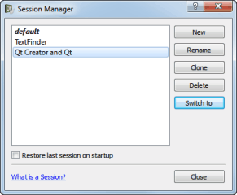
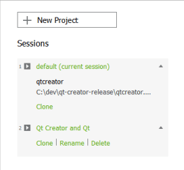

Managing Sessions
When you exit Qt Creator, a snapshot of your current workspace is stored as a session. To restore the session automatically when you start Qt Creator, select File > Sessions > Manage > Restore last session on startup.
When you open or create any of the following items, they automatically become a part of the session:
- Projects with their dependencies (including SUBDIRS projects)
- Editors
- Breakpoints and expressions
- Bookmarks
A session is personal, that is, not meant to be shared. It is not supposed to reflect the project structure. It contains personal data, such as bookmarks and breakpoints that are usually not of interest to other developers working on the same projects.
For example, if you work on a project and need to switch to another project for a while, you can clone the current session to save it under a name and create a new session for the other project. Everything that you open after switching to the new session becomes a part of it. When you want to return to working on the first project, switch to the saved session. Qt Creator opens the projects and files that belong to the session.
To manage sessions, select File > Sessions > Manage.

To save a session under a new name, select Clone.
To create a new session:
- Select New.
- In the Enter the name of the session field, enter a name for the session.
- Select Create to create a new empty session or Create and Open to create a session and to switch to it.
To switch between sessions, select Switch to.
When you launch Qt Creator, a list of existing sessions is displayed in the Welcome mode. To open a session, select it or press Ctrl+Alt+<number>, where <number> is the number of the session to open (available for the first nine sessions).

You can also use the t locator filter to open a session. For more information, see Searching with the Locator.
To view more information about a session, select the down arrow icon that appears when you move the mouse cursor over the session name. Select actions to clone, rename, and delete sessions.
When you start Qt Creator from the command line, you can give the name of a session as argument and Qt Creator will start with this session.
For more information, see Using Command Line Options.